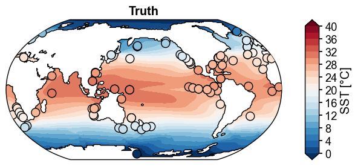
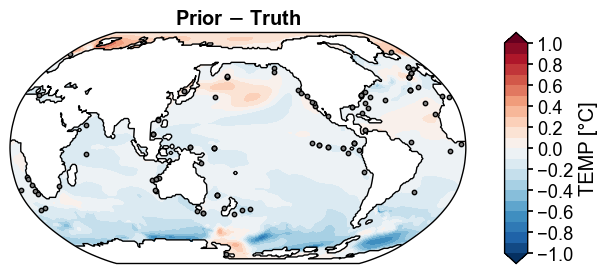
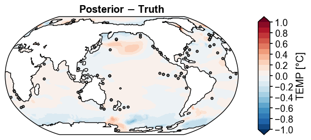
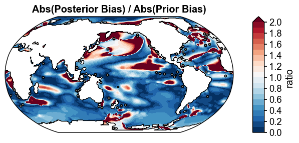
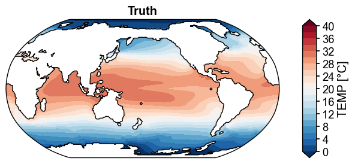
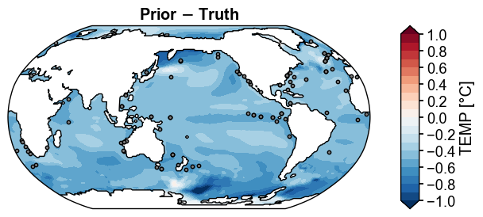
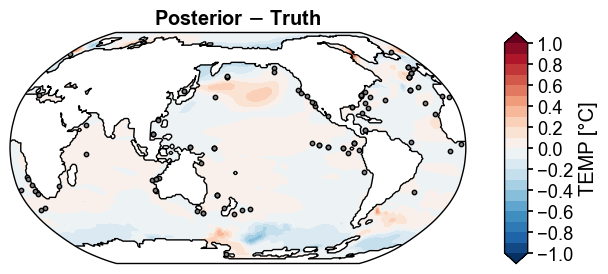
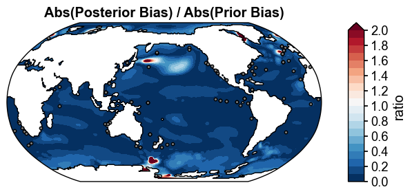
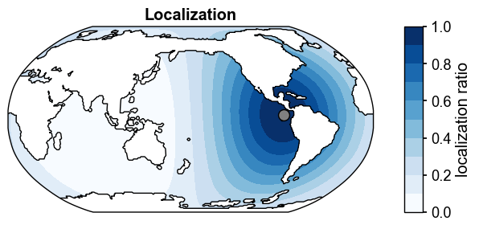

PPE: Pliocene Equilibrium Reconstruction#
[1]:
%load_ext autoreload
%autoreload 2
import os
os.chdir('/glade/work/fengzhu/GitHub/cfr/docsrc/v2026/notebooks')
import numpy as np
import pandas as pd
import xarray as xr
import cfr
cfr.use('v2026')
print(cfr.__version__)
import datetime
print(f'Last update: {datetime.date.today()}')
2026.4.8
Last update: 2026-04-16
Obs Setup#
[2]:
da_truth = xr.open_dataset('./data/ppe_Plio400ppm_ann.nc')['TEMP'].isel(z_t=0).mean('time')
da_truth
[2]:
<xarray.DataArray 'TEMP' (nlat: 394, nlon: 320)> Size: 504kB
array([[nan, nan, nan, ..., nan, nan, nan],
[nan, nan, nan, ..., nan, nan, nan],
[nan, nan, nan, ..., nan, nan, nan],
...,
[nan, nan, nan, ..., nan, nan, nan],
[nan, nan, nan, ..., nan, nan, nan],
[nan, nan, nan, ..., nan, nan, nan]],
shape=(394, 320), dtype=float32)
Coordinates:
TLAT (nlat, nlon) float64 1MB ...
TLONG (nlat, nlon) float64 1MB ...
ULAT (nlat, nlon) float64 1MB ...
ULONG (nlat, nlon) float64 1MB ...
z_t float32 4B 500.0
Dimensions without coordinates: nlat, nlon
Attributes:
long_name: Potential Temperature (Annual)
units: °C
grid_loc: 3111
cell_methods: time: mean
path: ['/glade/campaign/univ/uazn0034/fengzhu/CESM_output/timese...
comp: ocn
grid: g16[3]:
R = 0.01
df = pd.read_json(f'./data/ppe_Plio400ppm_obs_SST_R{R:.2f}.json')
obs = cfr.Obs(df)
obs.setup()
obs.df
[3]:
| pid | lat | lon | time | value | R | type | psm_name | |
|---|---|---|---|---|---|---|---|---|
| 0 | DSDP516.Mg/Ca | -30.646322 | 324.994450 | [3.5] | [23.1653251648] | 0.01 | T | IdenticalSST |
| 1 | DSDP552.Mg/Ca | 55.593510 | 345.982189 | [3.5] | [17.0483608246] | 0.01 | T | IdenticalSST |
| 2 | DSDP590.Mg/Ca | -32.594207 | 162.898037 | [3.5] | [22.5412883759] | 0.01 | T | IdenticalSST |
| 3 | DSDP603.Mg/Ca | 35.261855 | 290.479297 | [3.5] | [25.1493167877] | 0.01 | T | IdenticalSST |
| 4 | DSDP609.Mg/Ca | 49.422589 | 335.045676 | [3.5] | [16.7079963684] | 0.01 | T | IdenticalSST |
| ... | ... | ... | ... | ... | ... | ... | ... | ... |
| 103 | ODP959.UK37 | 3.053953 | 356.530460 | [3.5] | [29.6693210602] | 0.01 | T | IdenticalSST |
| 104 | ODP978.UK37 | 35.655501 | 357.297471 | [3.5] | [23.1417293549] | 0.01 | T | IdenticalSST |
| 105 | ODP982.UK37 | 57.058493 | 343.381278 | [3.5] | [16.6606521606] | 0.01 | T | IdenticalSST |
| 106 | ODP999.UK37 | 12.533555 | 281.067292 | [3.5] | [28.507900238] | 0.01 | T | IdenticalSST |
| 107 | PuntaPiccola.UK37 | 37.115774 | 12.130472 | [3.5] | [22.895149231] | 0.01 | T | IdenticalSST |
108 rows × 8 columns
[4]:
cfr.set_style('journal', font_scale=1.2)
fig, ax = obs.plot(
levels=np.linspace(0, 40, 21),
cbar_kwargs={'ticks': np.linspace(0, 40, 11), 'label': 'SST [°C]'},
cyclic=True,
da_target=da_truth.x.regrid(),
title='Truth',
)
cfr.showfig(fig)
cfr.savefig(fig, './figs/ppe_truth_obs.pdf')

Figure saved at: "figs/ppe_truth_obs.pdf"
Prior Setup#
[9]:
pm = []
case_list = ['1xCO2', '350ppm', '490ppm', '2xCO2']
for tag in case_list:
ds = xr.open_dataset(f'./data/ppe_Plio{tag}_ann.nc')[['TS', 'TEMP']]
pm.append(cfr.PriorMember(ds.mean('time')))
prior = cfr.Prior(pm)
prior.ds['ens'] = ('ens', case_list)
prior.ds
[9]:
<xarray.Dataset> Size: 127MB
Dimensions: (ncol: 48602, ens: 4, z_t: 60, nlat: 394, nlon: 320)
Coordinates:
lat (ncol) float64 389kB -35.26 -35.65 -36.26 ... 36.68 36.68 36.05
lon (ncol) float64 389kB 315.0 315.8 317.2 318.0 ... 133.7 136.3 135.0
TLAT (nlat, nlon) float64 1MB -84.56 -84.56 -84.56 ... 72.2 72.19 72.19
TLONG (nlat, nlon) float64 1MB 320.6 321.7 322.8 ... 318.9 319.4 319.8
ULAT (nlat, nlon) float64 1MB -84.3 -84.3 -84.3 ... 72.42 72.41 72.41
ULONG (nlat, nlon) float64 1MB 321.1 322.3 323.4 ... 319.2 319.6 320.0
* z_t (z_t) float32 240B 500.0 1.5e+03 2.5e+03 ... 5.125e+05 5.375e+05
* ens (ens) <U6 96B '1xCO2' '350ppm' '490ppm' '2xCO2'
Dimensions without coordinates: ncol, nlat, nlon
Data variables:
TS (ncol, ens) float32 778kB 19.5 20.37 21.39 ... 19.82 20.87 21.65
TEMP (z_t, nlat, nlon, ens) float32 121MB nan nan nan ... nan nan nan[10]:
prior.set_hcoords({
'TS': ('lat', 'lon'),
# 'PRECT': ('lat', 'lon'),
# 'PSL': ('lat', 'lon'),
'TEMP': ('TLAT', 'TLONG'),
# 'SALT': ('TLAT', 'TLONG'),
# 'aice': ('TLAT', 'TLONG'),
})
Run the EnKF Solver#
[11]:
da_solver = cfr.enkf.Solver(prior, obs)
da_solver.prep(
loc_radius=10000,
loc_method='gaspari_cohn',
startover=True,
get_clim_kws={
'lat_coord': 'TLAT',
'lon_coord': 'TLONG',
'lat_dim': 'nlat',
'lon_dim': 'nlon',
},
)
>>> Proxy System Modeling: Y = H(X)
>>> Computing the localization matrix
Processing variables: 100%|██████████| 2/2 [00:01<00:00, 1.03it/s]
[12]:
da_solver.run(
method='EnSRF',
)
>>> DA update
Updating time slices: 0%| | 0/1 [00:00<?, ?it/s]Updating time slices: 100%|██████████| 1/1 [00:09<00:00, 9.08s/it]
[13]:
os.makedirs('./recons', exist_ok=True)
da_solver.post.to_netcdf(f'./recons/recon_Plio400ppm_R0.01_loc10000.nc')
da_solver.post
[13]:
<xarray.Dataset> Size: 248MB
Dimensions: (time: 1, ncol: 48602, ens: 4, z_t: 60, nlat: 394, nlon: 320)
Coordinates:
lat (ncol) float64 389kB -35.26 -35.65 -36.26 ... 36.68 36.68 36.05
lon (ncol) float64 389kB 315.0 315.8 317.2 318.0 ... 133.7 136.3 135.0
* ens (ens) <U6 96B '1xCO2' '350ppm' '490ppm' '2xCO2'
TLAT (nlat, nlon) float64 1MB -84.56 -84.56 -84.56 ... 72.2 72.19 72.19
TLONG (nlat, nlon) float64 1MB 320.6 321.7 322.8 ... 318.9 319.4 319.8
ULAT (nlat, nlon) float64 1MB -84.3 -84.3 -84.3 ... 72.42 72.41 72.41
ULONG (nlat, nlon) float64 1MB 321.1 322.3 323.4 ... 319.2 319.6 320.0
* z_t (z_t) float32 240B 500.0 1.5e+03 2.5e+03 ... 5.125e+05 5.375e+05
* time (time) float64 8B 3.5
Dimensions without coordinates: ncol, nlat, nlon
Data variables:
TS (time, ncol, ens) float64 2MB 20.83 20.84 20.86 ... 20.2 20.25
TEMP (time, z_t, nlat, nlon, ens) float64 242MB nan nan nan ... nan nanValidation#
[14]:
ds_truth = xr.open_dataset('./data/ppe_Plio400ppm_ann.nc').mean('time')
ds_truth
[14]:
<xarray.Dataset> Size: 66MB
Dimensions: (ncol: 48602, z_t: 60, nlat: 394, nlon: 320)
Coordinates:
lat (ncol) float64 389kB ...
lon (ncol) float64 389kB ...
TLAT (nlat, nlon) float64 1MB ...
TLONG (nlat, nlon) float64 1MB ...
ULAT (nlat, nlon) float64 1MB ...
ULONG (nlat, nlon) float64 1MB ...
* z_t (z_t) float32 240B 500.0 1.5e+03 2.5e+03 ... 5.125e+05 5.375e+05
Dimensions without coordinates: ncol, nlat, nlon
Data variables:
TS (ncol) float32 194kB 20.86 20.63 20.17 19.86 ... 20.23 19.39 20.28
PRECT (ncol) float32 194kB 4.232e-08 4.387e-08 ... 7.107e-08 6.165e-08
TEMP (z_t, nlat, nlon) float32 30MB nan nan nan nan ... nan nan nan nan
SALT (z_t, nlat, nlon) float32 30MB nan nan nan nan ... nan nan nan nan
aice (nlat, nlon) float32 504kB nan nan nan nan nan ... nan nan nan nan
PSL (ncol) float32 194kB 1.018e+05 1.018e+05 ... 1.017e+05 1.017e+05[16]:
ds_post = xr.open_dataset(f'./recons/recon_Plio400ppm_R0.01_loc10000.nc')
ds_post
[16]:
<xarray.Dataset> Size: 248MB
Dimensions: (time: 1, ncol: 48602, ens: 4, z_t: 60, nlat: 394, nlon: 320)
Coordinates:
lat (ncol) float64 389kB ...
lon (ncol) float64 389kB ...
* ens (ens) <U6 96B '1xCO2' '350ppm' '490ppm' '2xCO2'
TLAT (nlat, nlon) float64 1MB ...
TLONG (nlat, nlon) float64 1MB ...
ULAT (nlat, nlon) float64 1MB ...
ULONG (nlat, nlon) float64 1MB ...
* z_t (z_t) float32 240B 500.0 1.5e+03 2.5e+03 ... 5.125e+05 5.375e+05
* time (time) float64 8B 3.5
Dimensions without coordinates: ncol, nlat, nlon
Data variables:
TS (time, ncol, ens) float64 2MB ...
TEMP (time, z_t, nlat, nlon, ens) float64 242MB ...[17]:
import x4c
vn = 'TEMP'
da_truth = ds_truth[vn].isel(z_t=0).x.regrid()
da_prior = prior.ds[vn].isel(z_t=0).mean('ens').x.regrid()
da_post = ds_post[vn].isel(z_t=0).mean('ens').isel(time=0).x.regrid()
prior_truth = da_prior - da_truth
post_truth = da_post - da_truth
cfr.set_style('journal', font_scale=1.2)
fig, ax = da_truth.x.plot(
levels=np.linspace(0, 40, 21),
cbar_kwargs={'ticks': np.linspace(0, 40, 11)},
title='Truth',
cyclic=True,
)
fig, ax = prior_truth.x.plot(
levels=np.linspace(-1, 1, 21),
cbar_kwargs={'ticks': np.linspace(-1, 1, 11)},
title='Prior $-$ Truth',
df_sites=obs.df[['lat', 'lon']],
site_markersizes=10,
legend=False,
cyclic=True,
)
x4c.showfig(fig)
x4c.savefig(fig, '../figs/ppe_prior_truth_diff.pdf')
fig, ax = post_truth.x.plot(
levels=np.linspace(-1, 1, 21),
cbar_kwargs={'ticks': np.linspace(-1, 1, 11)},
title='Posterior $-$ Truth',
df_sites=obs.df[['lat', 'lon']],
site_markersizes=10,
legend=False,
cyclic=True,
)
x4c.showfig(fig)
x4c.savefig(fig, '../figs/ppe_post_truth_diff.pdf')
fig, ax = (np.abs(post_truth)/np.abs(prior_truth)).x.plot(
levels=np.linspace(0, 2, 21),
extend='max',
cbar_kwargs={'ticks': np.linspace(0, 2, 11), 'label': 'ratio'},
title='Abs(Posterior Bias) / Abs(Prior Bias)',
df_sites=obs.df[['lat', 'lon']],
site_markersizes=10,
legend=False,
cyclic=True,
)
x4c.showfig(fig)
x4c.savefig(fig, './figs/ppe_offline_improvement.pdf')


Directory created at: "../figs"
Figure saved at: "../figs/ppe_prior_truth_diff.pdf"

Figure saved at: "../figs/ppe_post_truth_diff.pdf"

Figure saved at: "figs/ppe_offline_improvement.pdf"
[19]:
vn = 'TEMP'
da_truth = ds_truth[vn].isel(z_t=0).x.regrid()
da_prior = prior.ds[vn].isel(z_t=0).sel(ens='350ppm').x.regrid()
da_post = ds_post[vn].isel(z_t=0).sel(ens='350ppm').isel(time=0).x.regrid()
prior_truth = da_prior - da_truth
post_truth = da_post - da_truth
x4c.set_style('journal', font_scale=1.2)
fig, ax = da_truth.x.plot(
levels=np.linspace(0, 40, 21),
cbar_kwargs={'ticks': np.linspace(0, 40, 11)},
title='Truth',
cyclic=True,
)
fig, ax = prior_truth.x.plot(
levels=np.linspace(-1, 1, 21),
cbar_kwargs={'ticks': np.linspace(-1, 1, 11)},
title='Prior $-$ Truth',
df_sites=obs.df[['lat', 'lon']],
site_markersizes=10,
legend=False,
cyclic=True,
)
x4c.showfig(fig)
x4c.savefig(fig, '../figs/ppe_prior_truth_diff.pdf')
fig, ax = post_truth.x.plot(
levels=np.linspace(-1, 1, 21),
cbar_kwargs={'ticks': np.linspace(-1, 1, 11)},
title='Posterior $-$ Truth',
df_sites=obs.df[['lat', 'lon']],
site_markersizes=10,
legend=False,
cyclic=True,
)
x4c.showfig(fig)
x4c.savefig(fig, '../figs/ppe_post_truth_diff.pdf')
fig, ax = (np.abs(post_truth)/np.abs(prior_truth)).x.plot(
levels=np.linspace(0, 2, 21),
extend='max',
cbar_kwargs={'ticks': np.linspace(0, 2, 11), 'label': 'ratio'},
title='Abs(Posterior Bias) / Abs(Prior Bias)',
df_sites=obs.df[['lat', 'lon']],
site_markersizes=10,
legend=False,
cyclic=True,
)
x4c.showfig(fig)
x4c.savefig(fig, './figs/ppe_offline_improvement_350ppm.pdf')


Figure saved at: "../figs/ppe_prior_truth_diff.pdf"

Figure saved at: "../figs/ppe_post_truth_diff.pdf"

Figure saved at: "figs/ppe_offline_improvement_350ppm.pdf"
[20]:
obs_idx = 10
ds_loc = cfr.utils.states2ds(da_solver.L[:, obs_idx], prior.ds.isel(ens=0))
fig, ax = ds_loc['TEMP'].isel(z_t=0).x.regrid().x.plot(
cmap='Blues',
levels=np.linspace(0, 1, 11),
cbar_kwargs={'label': 'localization ratio', 'ticks': np.linspace(0, 1, 6)},
title='Localization',
extend='neither',
df_sites=obs.df[['lat', 'lon']].iloc[[obs_idx]],
legend=False,
)
np.nanmax(da_solver.L)
/glade/work/fengzhu/conda-envs/cfr-py313/lib/python3.13/site-packages/xesmf/smm.py:131: UserWarning: Input array is not C_CONTIGUOUS. Will affect performance.
warnings.warn('Input array is not C_CONTIGUOUS. ' 'Will affect performance.')
[20]:
np.float64(0.9999998434333481)

[ ]: